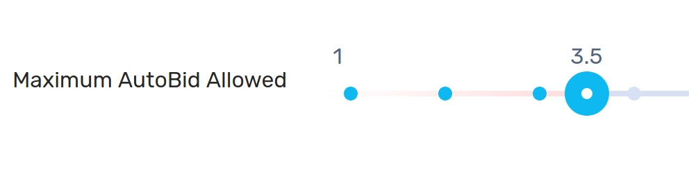
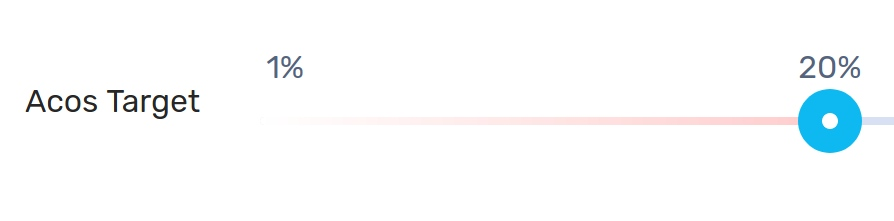
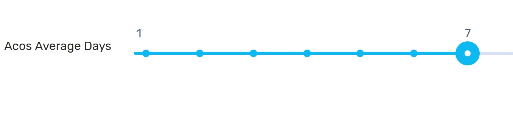
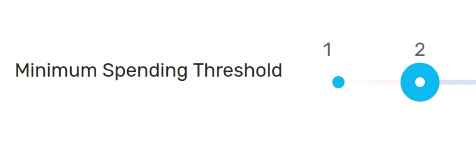
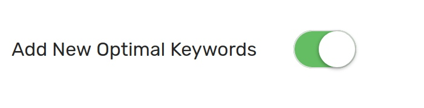
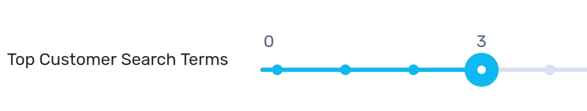
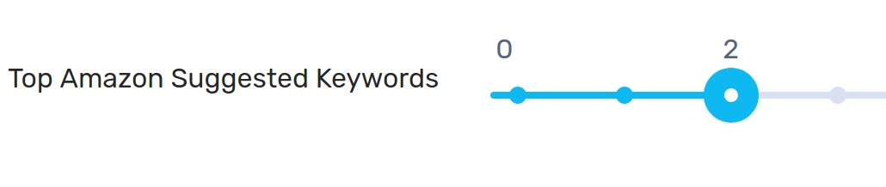
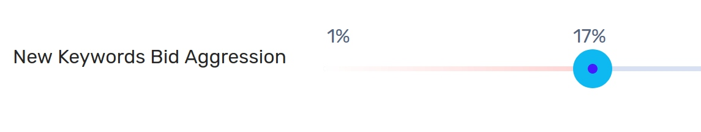

AutoPilot: Automation to Increase Sales and Reduce Ad costs
AutoPilot allows you to monitor your ads and automate the bids continuously to decrease your ad spend and also increase your sales. Using automation, AutoPilot can make sure that you don't over spend on ads more than required and also keep your sales flowing
- Jan
- Feb
- Mar
- Apr
- May
What is AutoPilot?
Quick Intro
Autopilot is a new auto-bidding feature that automatically adjusts your bids, bid boost, placement and budget for your Amazon ads in order to increase sales and lower ad costs.You can set the different parameters of the autopilot and the parameters can include the target advertising costs, time of day, week day, minimum spending threshold, past sales, impressions, cost per click etc.
The default values when you create a new auto pilot for campaigns suffices for most people.
The most important parameter for auto pilot is the target Advertising Costs (ACOS) which is the amount of money you are willing to spend as a proportion of the sales.
The default value of this is 30% and you can increase it or reduce it depending on the products in the campaign.
AutoPilot runs on these targets: Campaigns, AdGroups, Placements in AdGroups and keywords for manual campaigns and the phrase "target" can refer to any of these.
Step by Step
You can enable AutoPilot by clicking on auto pilot button for a campaign.
Autopilot is by default switched OFF for all campaigns and you have to switch each on individually.
This ensures that before you switch on AutoPilot, you check the default parameters and if you are satisfied, switch it on and save the AutoPilot settings.
-
1
Switch On
"Switch On" enables auto pilot for the selected campaign.
The rest of this document focuses on each setting and how you can further tweak it for your individual campaigns. -
2
ACOS Target
This is a critical part of the AutoPilot setting. The goal of the Auto Pilot is to either reach this ACOS or remain below this ACOS depending on the strategy of the
AutoPilot chosen.
The AutoBids are gradually tweaked to reach the targeted ACOS and because it occurs over several days as well the fact that bids for a particular product or keyword changes rapidly over days, the ACOS target is a rough estimate of what the AutoPilot will reach once active. -
3
ACOS Average Days
The ACOS for a target is by default sales vs costs calculated over the course of 7 days. This provides a smooth tweaking to AutoBid. However you can choose to calculate the ACOS for a different duration.
The lower the duration, the higher the probability that bids will rapidly change every day and lower the chances of hitting the ACOS target.
Choosing higher duration means smoother tweaking of the bids for the auto pilot and higher chances of hitting the ACOS target.
Usually lower duration results in higher sales with higher ad costs while higher duration results in predictable ad costs with slightly lower sales. -
4
Minimum Spending Threshold
AutoPilot won't run on a target if this minimum spending threshold is not reached. This prevents autopilot from premature optimizing of targets.
The default minimum spend is $1 (or equivalent in your currency: 1 EUR, 1 INR,1 CAD) and you can increase it to let the auto pilot only optimize higher spent targets. -
5

Maximum Autobid allowed
Set the maximum allowed bid by the AutoPilot. Set the maximum autobid to lower value if you would like to restrict experimenting with higher target.
Setting it to higher values will result in more sales at the cost of higher ACOS initially.
Setting it to high values will result is higher ad spend during the initial optimization time. A lower value does not give the autopilot much freedom to experiment with new keywords and higher bids to test ACOS.
The default Maximum AutoBid value is $3 (or equivalent in your currency: 3 EUR, 3 INR, 3 CAD) and you can increase it or decrease to let the auto pilot bid up/down to a different target.
-
6
Add New Optimal Keywords
You can automatically add two kind of keywords to your campaign continuously every 24 hours: Customer search terms and Amazon suggested keywords.
The default suggested is "3 customer queries that resulted in most sales" and "2 amazon suggested keywords".
Customer queries are keywords that do not exist in your campaign. In order to increase the efficiency of this setting make sure to optimize your inventory details and search keywords in the Amazon backend. -
7
Top Customer Search Terms
These are "top performing" customer search queries. The metric for determining the "top performance" is in the option below.
-
8
Top Amazon Suggested Keywords
These are top keywords recommended by Amazon. It is recommended to focus more on customer queries rather than Amazon recommendations as amazon recommendations are usually more expensive to bid on.
-
9
New Keywords Bid Aggression
Since new keywords have unknown ACOS, adding new keywords presents an risk in spending too much on ads and overshooting the target ACOS in the short term.
The bid aggression lets you choose the 'aggression' in choosing the percentage of bid value from the suggested value.
For example if the suggested bid is $2 and bid aggression is 50% then the default bid of the keyword would be $1.
Similarly if the suggested bid is $1 and the bid aggression is 30%, then the default bid would be $0.30.
Optimal values are between 30-50%. Higher values allows you to experiment with more keywords and get high performing keywords quickly but also risk spending excessively
FAQ
The AutoPilot runs anywhere between 1-4 times a day depending on the current state of your ads. If your ads are currently severely under optimized, the AutoPilot runs more often to quickly reduce the ad costs
Yes you can. Although we recommend you to create new campaigns with low budget initially
Amazon allows you to boost bids on campaigns and in "placements" in ad groups. However this boost is for the constant and it's hard to not only know how much to set but also when to set/change it. Using "AI Boost" the AutoPilot predicts the best time shoppers will buy your product and boost the bids only during peak time and peak days. Different products have different peak times and peak days. "AI Boost" can predict the best time and day and boost the bids during these peak times while also decreasing the boot during off-peak time
The timeline depends on the strategy requested and the "Average Acos" calculation method. For decreasing ad costs only, you should be able to see your costs reducing within 24 hours and will take around 5-7 days to stabilize.
For increasing sales, it will take a around 7 days for noticeable results.
Increasing the "Average Acos" calculation days will increase the timeline while decreasing the "Average Acos" days will decrease the timeline
Currently AutoPilot can handle Auto and Manual campaigns for sponsored products only.
AutoPilot has two components
1) The bid : This is continuously increased/decreased depending on the target ACOS by a series of small steps using the parameters in the AutoPilot settings.
2) Bid boost: Bid Boost allows Amazon to bid higher than specified bid if a customer is likely to convert. The value of bid boost is dynamically calculated by the AI and increased during peak hours while decreased during off-peak hour